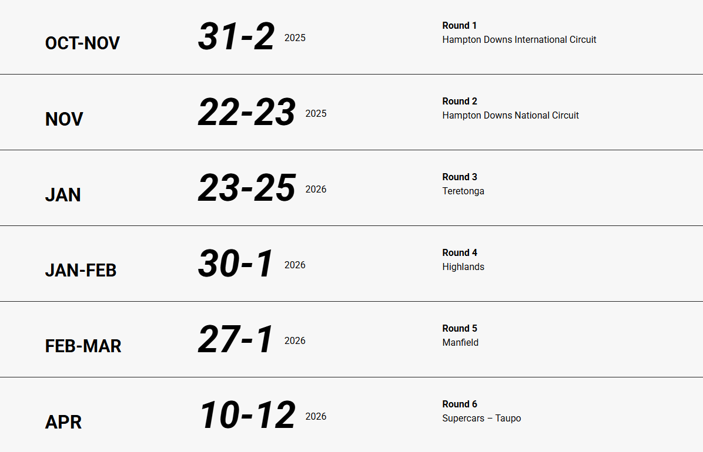

Dylan Grant Racing
Dylan Grant Racing
TA2 New Zealand — The Car
The TA2 NZ platform delivers raw, cost‑controlled V8 touring car action. Driver‑focused and spectacular.
Engine
6.2‑litre V8
6.2‑litre V8
Power
~525 hp
~525 hp
Weight
~1250 kg
~1250 kg
Drivetrain
Sequential gearbox · No ABS/TC
Sequential gearbox · No ABS/TC
Body Styles
Camaro · Mustang · Challenger (varies by team)
Camaro · Mustang · Challenger (varies by team)
Tyres/Brakes
Control package for close racing
Control package for close racing
2025/26 Season Calendar
| Round | Date | Circuit |
|---|---|---|
| 1 | Oct 31 – Nov 2, 2025 | Hampton Downs International Circuit |
| 2 | Nov 22 – 23, 2025 | Hampton Downs National Circuit |
| 3 | Jan 23 – 25, 2026 | Teretonga |
| 4 | Jan 30 – Feb 1, 2026 | Highlands |
| 5 | Feb 27 – Mar 1, 2026 | Manfeild |
| 6 | Apr 10 – 12, 2026 | Taupō (Supercars round) |
*Provisional; subject to event updates.
